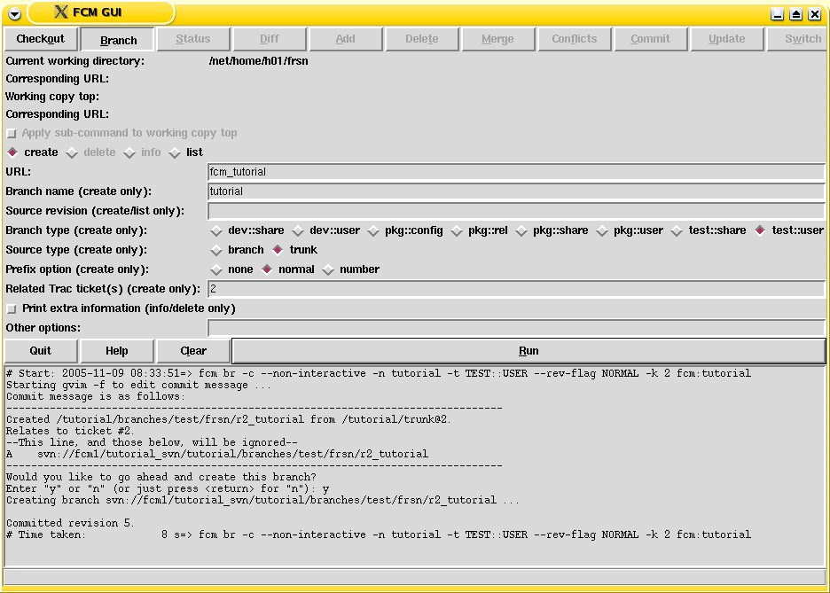
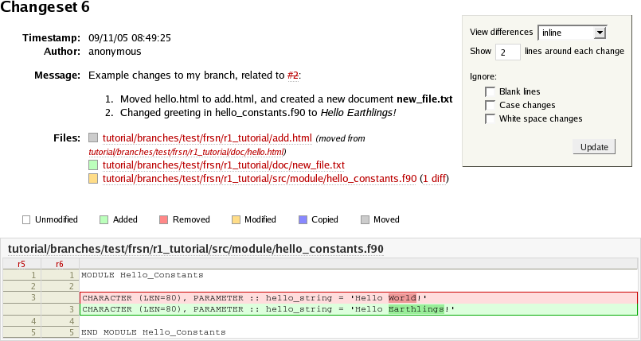
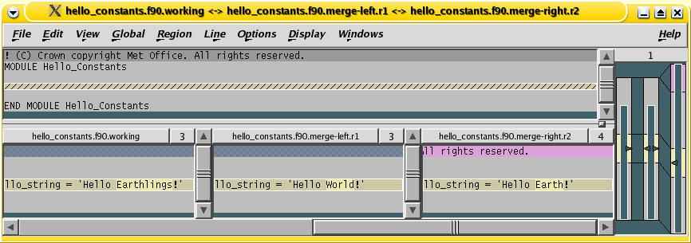

Getting Started is a "hands-on" approach to help you set up your FCM session, and familiarise yourself with some of the system's basic concepts and working practices. It is designed to complement other sections of the User Guide.
You may also find it useful to refer to the Annex: Quick reference.
It is easy to set yourself up to run FCM. Simply follow the steps below:
Setting up your PATH
The full FCM system is already available for you to use on the Met Office Linux desktop systems. On other Met Office systems (currently NEC & HP-UX) only the build component is functional.
On Linux & HP-UX systems FCM is automatically available in the standard PATH. It is also automatically added to your PATH when you run UI jobs on the NEC computers. However, if you intend to run FCM from the command line on the NEC then you will need to add the following to your $HOME/.profile script on that platform:
. ~fcm/FCM/bin/env.sh # Add FCM environment
Setting up the FCM GUI to work with Konqueror
If you like to use a graphical user interface for some common code management commands, you can set it up for launching from your desktop Konqueror file manager by typing:
(SHELL PROMPT)$ fcm_setup_konqueror
See the section on Accessing the GUI from Konqueror for further information.
Note that the first time you issue a command which requires authentication you may need to supply a password or run it from the command line. See the section on GUI Commands for further information.
Configure your editor for Subversion
When you attempt to create a branch or commit changes to the repository, you will normally be prompted to edit your commit log message using a text editor. The system chooses its editor by searching for a non-empty string through a hierarchy of environment variables in this order: SVN_EDITOR, VISUAL, and EDITOR. If none of these environment variables are set, the default is to use nedit. If you set your editor with an environment variable, it is worth bearing in mind that it must be able to run in the foreground. For example, you can add one of the followings in your $HOME/.kshrc (Korn) or $HOME/.bashrc (Bash):
# GVim export SVN_EDITOR='gvim -f' # Emacs export SVN_EDITOR=emacs # NEdit client "nc" export SVN_EDITOR='nc -wait'
Register your user name
At the Met Office, most projects managed by FCM grant write accesses to their Subversion repositories and Trac ticket create/modify privileges to authorised users only. If you are developing code for a project for the first time, please contact the system manager of the project, who will arrange with the FCM team to put your user name in the register.
Configure your e-mail address in Trac
Trac can be configured to send automatic e-mail notifications to authors of any ticket whenever there are changes to that ticket (and we would expect most systems to be configured in this way). You should check that the settings for your name and e-mail address are correct. To do this you need to go to the Settings page once you are logged into Trac. (Click on <Settings> just above the menu bar). Check that your settings are entered correctly. Note: at the Met Office, these settings are set up and maintained automatically, and so you should report any errors to the FCM team.
Configure your web browser
FCM assumes that you are using Firefox as your default web browser. If you use another web browser such as Mozilla, you should configure it in your $HOME/.fcm file. See the section on fcm trac for further information.
This tutorial leads you through the basics of using FCM to make changes to your source code, and demonstrates the recommended practices for working with it. A tutorial Subversion repository, with its own Trac system, is available for you to practice for working with the FCM system. You will work through the following activities:
We recommend that you create a work area in your filespace, for example, $HOME/tutorial/work for your working copy, and $HOME/tutorial/build for your build.
If you have not already done so, you should set up your desktop environment as described above in the How to set yourself up to run FCM section.
It is also worth knowing that the Subversion Book is a great source of reference of Subversion features. In particular, the Basic Concepts and Guided Tour chapters are well worth reading.
Trac is an integrated web-based issue tracker and wiki system. You will use it to manage and keep track of changes in your project. The issue tracker is called the ticket system. When you want to report a problem or submit a change request, you will create a new ticket. In a typical situation, you and/or your colleagues will make changes to your system in order to resolve the problem or change request, and you will monitor these changes via the ticket.
After completing this sub-section, you will learn how to:
Further reading:
To launch the Trac system for the tutorial: type and <Enter> the following command:
(SHELL PROMPT)$ fcm trac fcm:tutorial
This is probably the first time you have used the fcm command. The command has the general syntax:
fcm <sub-command> [<options...>] <arguments>
For example, if you type fcm help, it will display a listing of what sub-commands are available, and if you type fcm help <sub-command>, it will display help for that particular sub-command.
The trac sub-command launches the corresponding Trac system browser for a Subversion URL specified in your argument. In this case, we are asking it to display the Trac system browser for the tutorial. The argument fcm:tutorial is a FCM URL keyword and will be expanded by FCM into a real Subversion URL (e.g. svn://fcm1/tutorial_svn/tutorial). You are encouraged to use FCM URL keywords throughout the tutorial, as it will save you a lot of typing.
Note: Although we use the Trac system as a browser for a Subversion repository, they do not interact in any other ways. Having access to a Trac system does not guarantee the same privilege to a Subversion repository. In particular, you should note the differences between the URLs of a Subversion repository path and its equivalence in a Trac browser.
There are other ways to launch the Trac system for a project. If you know its URL, you can launch the Trac system by entering it in the address box of your favourite browser. If you often access a Trac system for a particular project, you should bookmark it in your favourite browser.
Click on <Login> just above the menu bar, enter your Unix/Linux user ID as your user name and leave the password empty. Then click on <OK> to proceed.
Once you have logged in, the <New Ticket> link will become available on the menu bar. Click on it to display a new ticket form, where you can enter details about your problem or change request. In the tutorial, it does not matter what you enter, but you should feel free to play around with wiki formatting when entering the "Full description". (Click on <WikiFormatting> to see how you can use it.) For example:
Tutorial to change repository files and resolve conflicts with the trunk
In this tutorial, I shall: 1. try out the FCM GUI and its functions 2. play with WikiFormatting in Trac tickets 3. create a branch and checkout a working copy 4. make changes to files in it 5. commit my changes and assign the ticket for review 6. record the review and assign the ticket back to the author 7. merge in the trunk, and resolve any conflicts 8. merge my changes back to the trunk 9. close the ticket 10. delete my branch
At the bottom of the page, click the <Preview> button to see what the description would look like. When you are happy, click the <Submit changes> button. Trac will create the new ticket and return it in a state where you can append to it.
When the ticket is created, you should get an automatic e-mail notication from the Trac system. In real life, depending on the setting, the owner of your Trac system may also get a similar e-mail notification. It is worth noting that each time the ticket is modified, the Trac system will send out an e-mail notification to you (the reporter) and anyone who modified the ticket subsequently.
You should remember the number of your new ticket, as you will have to revisit it later.
In real work, it is often not practical to have to remember the numbers of all the tickets you have created. Trac provides a powerful custom query for searching a ticket. You can search for the ticket you have just created by clicking the <View Tickets> link. Feel free to play with the custom query tool. Add or remove filters and try grouping your results by different categories.
In addition, you can search your ticket using the keyword <Search> utility at the top right hand corner of each Trac page. (If you enter #<number> in the search box, it will take you directly to that ticket.) In the tutorial, however, it may be easiest if you simply leave the tutorial Trac system open, so that you do not have to login again when you come back to your ticket.
The status of the ticket is new. When you start working on a problem reported in a ticket or when you are reviewing changes for a colleague, it is often good practice to "accept" the ticket to indicate that you are working on it. For the purpose of the tutorial, however, it is entirely optional whether you accept the ticket or not, since you know you will be doing all the work any way.
To accept a ticket, click on <accept ticket> in the Action box at the bottom of the page, and then click on <Submit changes>.
The FCM GUI is a basic graphical wrapper for some of the common code management commands. Most examples in this tutorial can be done via the GUI. You can skip this section and use only the command line if that is what you prefer. Where appropriate, usage examples will be given for both the command line and the FCM GUI.
After completing this sub-section, you will learn how to:
Further reading:
You can launch the GUI from the command line. Change directory to your work area and then type fcm gui.
Alternatively, open Konqueror and navigate to your work area. Right-click in the file-manager window to bring up a menu. Select Open with > FCM GUI.
You create a branch by making a copy of your project at a particular revision. Most often, this will be a particular revision of the trunk, i.e. the main branch/development line in your project. A branch resides in the repository. It allows you to work in parallel with your colleagues without affecting one another, while keeping your changes under version control.
After completing this sub-section, you will learn how to:
Further reading:
Command line: issue the fcm branch --create (or simply fcm br -c) command. E.g.:
(SHELL PROMPT)$ fcm br -c -n tutorial -r 1 --type test -k 2 fcm:tutorial
FCM GUI: click on <Branch> on the top menu bar of the GUI. Check the <create> radio button and configure your branch details as follow:
Click on <Run> when you are ready.

You will be prompted to edit the message log file. A standard template is automatically supplied for the commit. However, if you want to add extra comment for the branch, please do so above the line that says "--This line will be ignored and those below will be inserted automatically--". When you are ready, save your change and exit the editor. Answer <Yes> when you are prompted to go ahead and create the branch.
Note: If you are on the command line, the Subversion command will prompt you for a password the first time you access a repository. The password will normally be cached by the client, and you will not have to specify a password on subsequent access. If you are using the GUI, please refer to the section on GUI Commands in the next chapter for further information.
When creating branches for the first time, you will notice that FCM will create and commit any missing sub-directories it needs to set up your branch inside the repository, before creating your branch and commiting it.
Take a note of the revision number the branch was created at, and its branch name. (The revision number is the number following the last output that says "Committed revision". In the example above, the branch created at [5] is called branches/test/frsn/r1_tutorial, which is a branch of the tutorial project in the svn://fcm1/tutorial_svn repository.)
If you wish, you can update your ticket with details of the branch. Note that this step is entirely optional. It is useful for developments which will take a long time to complete. For short lived branches, this step is probably unnecessary.
In the ticket you have created, refer to the revision number in the Add/Change box, for example:
Created the branch [source:tutorial/branches/test/frsn/r1_tutorial@5] at [5].
Note:
Click on <Preview> and check that the links work correctly, and on <Submit changes> when you are ready.
A Subversion working copy is an ordinary directory tree on your local system, containing a collection of files. It is your private working area in which you can make changes before publishing them back to the repository. You create a working copy by using the checkout command on some subtree of the repository.
After completing this sub-section, you will learn how to:
Further reading:
Command line: issue the fcm checkout (or simply fcm co) command. E.g.:
(SHELL PROMPT)$ fcm co fcm:tutorial_br/test/frsn/r1_tutorial
FCM GUI: click on <Checkout> in the GUI, and enter the URL of your branch, e.g. fcm:tutorial_br/test/frsn/r1_tutorial. Note:
Click on <Run> - a working copy pointing to your branch will be created. The GUI will automatically change directory to the top of your new working copy.
| Example output, checking out the branch |
|---|
=> svn co --revision HEAD svn://fcm1/tutorial_svn/tutorial/branches/test/frsn/r1_tutorial A r1_tutorial/cfg A r1_tutorial/cfg/ext.cfg A r1_tutorial/doc A r1_tutorial/doc/hello.html A r1_tutorial/src A r1_tutorial/src/subroutine A r1_tutorial/src/subroutine/hello_c.c A r1_tutorial/src/subroutine/hello_sub.f90 A r1_tutorial/src/module A r1_tutorial/src/module/hello_constants.f90 A r1_tutorial/src/program A r1_tutorial/src/program/hello.f90 Checked out revision 5. |
Subversion provides various useful commands to help you monitor your working copy. The most useful ones are "diff", "revert" and "status". You will also find "add", "copy", "delete" and "move" useful when you are rearranging your files and directories.
After completing this sub-section, you will learn how to:
Further reading:
For the later part of the tutorial to work, you must make the following modification:
Try the following so that you know how to restore a changed file:
(SHELL PROMPT)$ fcm revert hello_c.c
You may also want to try the following FCM commands in your doc/ sub-directory. You can safely make changes here since they will not interfere with your code changes.
(SHELL PROMPT)$ echo 'Some text' >new_file.txt (SHELL PROMPT)$ fcm add new_file.txt
(SHELL PROMPT)$ fcm copy hello.html add.html (SHELL PROMPT)$ fcm delete hello.html
Command line: issue the fcm status (or simply fcm st) command.
FCM GUI: click on <Status> and then on <Run> to see what has changed:
| Example output, status in a working copy |
|---|
=> svn status D doc/hello.html A doc/new_file.txt A + doc/add.html M src/module/hello_constants.f90 |
This confirms the actions you have taken. You have Deleted a file, Added a new file, Added a file with history (+) and Modified another. It also confirms the action of the revert command.
You can view the changes you have made to your working copy.
Command line: issue the fcm diff --graphical (or simply fcm di -g) command.
FCM GUI: click on <Diff> and then on <Run>.
A listing of the files you have changed will be displayed, and a graphical diff tool will open up for each modified file.
The change in your working copy remains local until you commit it to the repository where it becomes permanent. If you are planning to make a large number of changes, you are encouraged to commit regularly to your branch at appropriate intervals.
After completing this sub-section, you will learn how to:
Further reading:
Command line: issue the fcm commit (or simply fcm ci) command.
FCM GUI: click on <Commit> and then on <Run>.
A text editor will appear to allow you to edit the commit message. You must add a commit message to describe your change above the line that says "--This line, and those below, will be ignored--". (A suggestion is given as the highlighted text in the example below.) Your commit will fail if you do not enter a commit message.
Save your change and exit the editor. Answer <Yes> when you are prompted to confirm the commit. For example:
| Example output, commit my changes to the repository |
|---|
Starting nedit to create commit message ... Commit message is as follows: ------------------------------------------------------------------------ In my tutorial branch, for #2: 1. Moved hello.html to add.html, and created a new document '''new_file.txt''' 2. Changed greeting in hello_constants.f90 to ''Hello Earthlings!'' --This line, and those below, will be ignored-- [Project: tutorial] [Branch : branches/test/frsn/r1_tutorial] [Sub-dir: <top>] D doc/hello.html A doc/new_file.txt A + doc/add.html M src/module/hello_constants.f90 ------------------------------------------------------------------------ Adding doc/add.html Deleting doc/hello.html Adding doc/new_file.txt Sending src/module/hello_constants.f90 Transmitting file data .. Committed revision 6. Performing update to make sure your working copy is at this new revision ... At revision 6. |
Click on <Timeline> in Trac. Drill down to your changeset and see how it appears. (Alternatively, if you enter "[<number>]" into the search box at the top right, it will take you directly to the numbered changeset.) For example:

Note:
You should test the changes in your branch before asking a colleague to review them. FCM features a build system that allows you to build your code easily. As your changes may be located in a repository branch and/or a working copy, you should work with the extract system to extract the correct code to build. The extract system allows you to extract code from the repository, combining changes in different branches and your working copy, before generating a configuration file and a suitable source tree for feeding into the build system.
In this sub-section of the tutorial, you will be shown how to extract and build the code from your branch. (There are some extra activities on the extract and build systems in a later sub-section of the tutorial should you want to explore the extract and build systems in more depth.) In the example here, the extract and build systems will be shown to you in their simplest form. In real life, the managers of the systems you are developing code for will provide you with more information on how to extract and build their systems.
After completing this sub-section, you will learn how to:
Further reading:
You should extract and build your code in a different directory to your working copy. For example, you may want to create a sub-directory tutorial/build/ in $HOME and change to it:
(SHELL PROMPT)$ mkdir -p $HOME/tutorial/build (SHELL PROMPT)$ cd $HOME/tutorial/build
To set up an extract configuration file from scratch, launch your favourite editor and add the following lines:
| Example extract configuration, extract from a branch |
|---|
# Extract configuration, format version 1.0 cfg::type ext cfg::version 1.0 # Extract destination root directory dest::rootdir $HOME/tutorial/build # Location of the source in the "r1_tutorial" branch repos::tutorial::base fcm:tutorial_br/test/$LOGNAME/r1_tutorial # Extract all sub-directories under the above URL expsrc::tutorial::base src # Fortran compiler, C compiler and linker commands respectively # You may need to redefine these for different platforms bld::tool::fc ifc bld::tool::cc gcc bld::tool::ld ifc |
Note:
Save the file as "ext.cfg" and exit your editor.
Issue the command "fcm extract" and you should get an output similar to the following:
| Example output, extract from a branch |
|---|
(SHELL PROMPT)$ fcm extract Extraction started on Thu Oct 27 13:54:06 2005. Config file (ext): /net/home/h01/frsn/tutorial/build/ext.cfg ->Extract: start Number of directories created : 4 Number of updated files : 4 ->Extract: 1 second ->TOTAL : 1 second Extraction finished on Thu Oct 27 13:54:07 2005. |
If nothing goes wrong, you should end up with the sub-direcories "src/" and "cfg/" in your working directory. The "src/" contains a source tree to be built, and "cfg/" should contain two configuration files: "ext.cfg" and "bld.cfg". The former is an expanded version of your extract configuration file and the latter is a build configuration file. You can now build your code by running the "fcm build" command:
| Example output, build |
|---|
(SHELL PROMPT)$ fcm build 2>err Build command started on Fri Oct 14 09:15:38 2005. ->gt;Setup : start Config file (bld): /net/home/h01/frsn/tutorial/build/cfg/bld.cfg ->Setup : 0 second ->Pre-process : start ->Pre-process : 0 second ->Scan dependency : start Scanned files in 3 package(s) for dependency Updated make rules for 3 package(s). Updated Makefile: /net/home/h01/frsn/tutorial/build/bld/Makefile ->Scan dependency : 1 second ->Generate interface : start Number of generated interfaces: 1 ->Generate interface : 0 second ->Make : start ifc -o hello_constants.o -I/home/h01/frsn/tutorial/build/inc -c /home/h01/frsn/tutorial/build/src/tutorial/src/module/hello_constants.f90 ifc -o hello.o -I/home/h01/frsn/tutorial/build/inc -c /home/h01/frsn/tutorial/build/src/tutorial/src/program/hello.f90 ifc -o hello_sub.o -I/home/h01/frsn/tutorial/build/inc -c /home/h01/frsn/tutorial/build/src/tutorial/src/subroutine/hello_sub.f90 gcc -o hello_c.o -I/home/h01/frsn/tutorial/build/inc -c /home/h01/frsn/tutorial/build/src/tutorial/src/subroutine/hello_c.c ifc -o hello.exe /home/h01/frsn/tutorial/build/obj/hello.o -L/home/h01/frsn/tutorial/build/lib -l__fcm__hello ->Make : 3 seconds ->TOTAL : 4 second Build command finished on Fri Oct 14 09:15:42 2005. |
The executable you have built is "hello.exe", which is located in the "bin/" sub-directory. You can test your executable by running it. You should get an output similar to the following:
| Example output, running the build |
|---|
(SHELL PROMPT)$ bin/hello.exe Hello: Hello Earthlings! Hello_Sub: Hello Earthlings! Hello_Sub: maximum integer: 2147483647 Hello_C: Hello World! |
Your branch is normally isolated from other development lines in your project. However, at some point during your development, you may need to merge your changes with those of your colleagues. In some cases, it is desirable to merge changes regularly from the trunk to keep your branch up to date with the latest development. The automatic merge provided by FCM allows you to do this easily.
A merge results in a conflict if changes being applied to a file overlap. FCM uses a graphical merge tool to help you resolve conflicts in text files.
After completing this sub-section, you will learn how to:
Further reading:
Perform the merge in your working copy.
Command line: issue the fcm merge command. E.g.
(SHELL PROMPT)$ fcm merge trunk
FCM GUI: click on <Merge>. Enter "trunk" into the Source entry box and click on <Run> to proceed.
If there is more than one revision of the source that you can merge with, you will be prompted for the revision number you wish to merge from. You will not be prompted in this case, because there is only one revision of the source that you can merge with.
Answer <Yes> when you are prompted to go ahead with the merge.
| Example output, merging changes from the trunk |
|---|
Available Merges From /tutorial/trunk: 2 About to merge in changes from tutorial/trunk@2 compared with tutorial/trunk@1 This merge will result in the following changes: ------------------------------------------------------------------------ U src/subroutine/hello_c.c C src/module/hello_constants.f90 ------------------------------------------------------------------------ Performing merge ... U src/subroutine/hello_c.c C src/module/hello_constants.f90 |
The "C" status indicates that the file you changed is now in conflict. If you run status, you will see extra files created by the merge, which enable you to resolve the conflict using the 3-way difference tool xxdiff:
| Example output, status in conflict |
|---|
=> svn status M src/subroutine/hello_c.c ? src/module/hello_constants.f90.merge-left.r1 ? src/module/hello_constants.f90.merge-right.r2 ? src/module/hello_constants.f90.working C src/module/hello_constants.f90 |
You will now have to resolve the conflicts.
Command line: issue the fcm conflicts (or simply fcm cf) command.
FCM GUI: click on <Conflicts> and then on <Run>.
xxdiff comes into play:

See the sub-section on resolving conflicts, or the xxdiff User's Manual (click on <Help>) to guide you through this process. (If you do not want to learn how to use xxdiff now, you can just select Exit with ACCEPT from the File menu. This saves the file you are merging in as the result of the merge, i.e. you have accepted all the changes).
On resolving the conflict, you will be asked to run "svn resolved". Answer <Yes>.
If you now run status, you will notice that these extra conflict files have disappeared.
| Example output, resolving conflicts |
|---|
Conflicts in file: src/module/hello_constants.f90 All merge conflicts resolved Resolved conflicted state of 'hello_constants.f90' => svn status M src/subroutine/hello_c.c M src/module/hello_constants.f90 |
It is important to remember that the merge command only applies changes to your working copy. Therefore, you must now commit the change in order for it to become permanent in the repository. Similar to other changes, it is a good practice to use diff to inspect the changes before committing.
When you run commit, you will be prompted to edit the commit log as usual. However, you may notice that a standard template is already provided for you by the merge command. In most cases, the standard message should be sufficient. However, if you want to add extra comment to the commit, please do so above the line that says "--This line will be ignored and those below will be inserted automatically--". This is useful, for example, if there were significant issues addressed in the merge.
For the purpose of this tutorial, we assume that your changes are complete, have been tested and committed to the repository, and are now ready for review. You should assign the ticket to the reviewer and inform him/her where to find the changes you wish him/her to review. The reviewer will record any issues in the ticket, perhaps linking to other documents as required. Once completed, he/she will record the outcome in the ticket and assign it back to the you.
After completing this sub-section, you will learn how to:
Further reading:
Before you ask someone to review your code, it is often a good idea to have a look at the changes one more time. To view the changes in a branch, you can look at all the changes relative to its base.
Command line: issue the fcm diff --branch --graphical (or simply fcm di -b -g) command.
FCM GUI: click on <Diff>. Check the box <Show differences relative to the base of the branch>, and click on <Run>.
You should be presented with the differences between the branch and the trunk (since the last merge).
Note: you can also use the --trac (-t) option instead of --graphical (-g) to view the changes in a branch using Trac rather than using a graphical diff tool. Take note of the Trac URL for displaying the differences. The part that begins with "diff:" is of particular interest to you, as it is a Trac link that can be inserted into a Trac wiki/ticket. In the above example, the Trac link would look like: diff:/tutorial/trunk@2///tutorial/branches/test/frsn/r1_tutorial@7.
Back in your ticket, add an appropriate comment showing where to find your changes, in the Add/Change box. Include a link to your branch and a diff link (see above) in the comment. For example:
The [log:tutorial/branches/test/frsn/r1_tutorial@5:7] branch proposes changes to the greeting in hello_constants.f90. It also contains some new documents. See [diff:/tutorial/trunk@2///tutorial/branches/test/frsn/r1_tutorial@7] for the changes. Fred, could you review the change, please? |
Note: the syntax [log:tutorial/branches/test/frsn/r1_tutorial@5:7] will be translated by Trac into a link to the revision log browser to display the log between revision 5 and 7 of the branches/test/frsn/r1_tutorial branch in the tutorial project; and the syntax [diff:/tutorial/trunk@2///tutorial/branches/test/frsn/r1_tutorial@7] will be translated into a link to display the differences between the trunk at revision 2 and the branch at revision 7. Click on <Preview> and check that the links work correctly.
To re-assign a ticket to your reviewer, click on the <reassign to> button in the Action box section and enter the reviewer's User ID.
When you are ready, click on <Submit changes>.
For the purpose of this tutorial, you will act as the reviewer of the changes you have made. Following the review, you should record its outcome and re-assign the ticket back to the author. Enter the comment "No issues were found during the review". Click on the <reassign to> button in the Action box section, and enter your guest account name. Click on <Submit changes> when you are ready.
Your changes in the branch have been tested and reviewed. It is now time to merge and commit it to the trunk. Once you have committed your change, you will close your ticket to complete the work cycle.
After completing this sub-section, you will learn how to:
Further reading:
Command line: issue the fcm switch (or simply fcm sw) command. E.g.:
(SHELL PROMPT)$ fcm sw trunk
FCM GUI: click on <Switch>. Enter "trunk" as the URL and then click on <Run>.
To check that your working copy is pointing to the trunk, you should: command line: issue the fcm info command; FCM GUI: inspect the "corresponding URL" of your working copy.
Command line: issue the fcm merge command. E.g.
(SHELL PROMPT)$ fcm merge branches/test/frsn/r1_tutorial
FCM GUI: click on <Merge>. Enter the name of your branch in the Source entry box, (e.g. "branches/test/frsn/r1_tutorial"). Click on <Run> to proceed.
| Example output, merging changes back to the trunk |
|---|
Available Merges From /tutorial/branches/test/frsn/r1_tutorial: 7 6 About to merge in changes from /tutorial/branches/test/frsn/r1_tutorial@7 compared with /tutorial/trunk@2 This merge will result in the following changes: ------------------------------------------------------------------------ D doc/hello.html A doc/new_file.txt U src/module/hello_constants.f90 A add.html ------------------------------------------------------------------------ Performing merge ... D doc/hello.html A doc/new_file.txt U src/module/hello_constants.f90 A add.html |
Since there is more than one revision available for merging, you will be prompted for the revision number you wish to merge from. The default is the last changed revision of your branch. which is the revision you want to merge with, so you should just proceed with the default.
Answer <Yes> when you are prompted to go ahead with the merge.
Since we merged in the latest changes from the trunk into the branch, there should be no conflicts from this merge.
Once again, please remember that the merge command only changes your working copy. You need to commit the change before it becomes permanent in the repository. Before you commit to the trunk, however, it is often sensible to have a last look at what you are going to change using the diff command.
Note: We have set up the repository to prevent any commits to the trunk to preserve the tutorial for other users, so your commit to the trunk will fail. However, you should try doing it any way to complete the exercise.
Command line: issue the fcm commit (or simply fcm ci) command.
FCM GUI: click on <Commit> and then on <Run>.
A text editor will appear to allow you to edit the commit message. You must add a commit message to describe your change above the line that says "--This line will be ignored and those below will be inserted automatically--". Since you are going to commit changes to the trunk, you should provide a useful message, including a link to your ticket. For example:
For #2: complete the tutorial: 1. Changed greeting in hello_constants.f90 to "Hello Earthlings!" 2. Moved hello.html to add.html, and created a new document ''new_file.txt'' |
When you are ready, save your change and exit the editor.
As we have said before, the command will fail when you try to proceed with the commit.
As you have completed your work, you should now update and close your ticket. In real life, you will typically include a closing comment with an appropriate Trac wiki link to the changeset in the trunk that fixes the ticket.
Since you cannot commit to the trunk in the tutorial, you can include a Trac link to the latest changeset in your branch. For example, you can put "Fixed at changeset [7]." in the comment. To mark the ticket as "fixed", move down to the Action box section, click on <resolve as> and choose fixed. Use <Preview> to ensure that your links work correctly. When you are happy, click on <Submit changes>.
The extract and build systems are very flexible. If you have time, you may want to explore their uses in more depth.
After completing this sub-section, you will learn how to:
Further reading:
Modify the source files in your working copy and commit the changes back to your branch in the repository. Re-run "fcm extract" and "fcm build" and see the results of the changes. [The file(s) you have changed should be updated by "extract", and "build" should only re-build the necessary code.]
In fact, you can test changes in your working copy directly using a similar "extract" and "build" mechanism. In such case, you need to modify the REPOS declaration. For example:
repos::tutorial::base $HOME/fcm/work/r1_tutorial
Modify the compiler flags, and re-run "fcm extract" and "fcm build" and see the results of the changes. To modify the compiler flags, edit your extract configuration file, and add the declarations for changing compiler flags. For example:
# Declare extra options for Fortran compiler bld::tool::fflags -i8 -O3
For further information on how to set your compiler flags, please refer to the sub-section on Setting the compiler flags.
Try extracting from an earlier revision of your branch. Suppose the HEAD of your branch is revision 7, and the branch was created at an earlier revision. You can extract your branch at, say, revision 5 by adding a declaration in your extract configuration file:
version::tutorial::base 5
You can also try extracting from the trunk. In such case, you will need to modify the REPOS declaration in your extract configuration file. For example:
repos::tutorial::base fcm:tutorial_tr/src # Extract with and without the following line and note the difference! version::tutorial::base 1
You should remove your branch when it is no longer required. When you remove it, it becomes invisible from the HEAD revision, but will continue to exist in the repository, should you want to refer to it in the future.
After completing this sub-section, you will learn how to:
Further reading:
If you forget what your branch is called and/or what other branches you have created, you can get a listing of all the branches you have created in a project.
Command line: issue the fcm branch --list (or simply fcm br -l) command
FCM GUI: click on <Branch>, and then on the <list> radio button. Click on <Run>.
Switch your working copy to point back to your branch.
Command line: issue the fcm switch <URL> (or simply fcm sw <URL>) command.
FCM GUI: click on <Switch>. Enter the name of your branch as the URL and click on <Run> to proceed.
You can continue your work in the branch if you wish, but once you have finished all the work, you should delete it. Command line: issue the fcm branch --delete (or simply fcm br -d) command. FCM GUI: click on <Branch> in the GUI. Check the <delete> radio button, and click <Run> to proceed.
| Example output, deleting a branch |
|---|
URL: svn://fcm1/tutorial_svn/tutorial/branches/test/frsn/r1_tutorial
Repository Root: svn://fcm1/tutorial_svn
Repository UUID: cb858ce8-0f05-0410-9e64-efa98b760b62
Revision: 7
Node Kind: directory
Last Changed Author:
Last Changed Rev: 7
Last Changed Date: 2005-11-09 09:11:57 +0000 (Wed, 09 Nov 2005)
--------------------------------------------------------------------------------
Branch Create Rev: 5
Branch Create Date: 2005-11-09 08:34:22 +0000 (Wed, 09 Nov 2005)
Branch Parent: svn://fcm1/tutorial_svn/tutorial/trunk@1
--------------------------------------------------------------------------------
Last Merge From Trunk: /tutorial/branches/test/frsn/r1_tutorial@7
/tutorial/trunk@2
Avail Merges Into Trunk: 7 6
Starting nedit to create commit message ...
Commit message is as follows:
------------------------------------------------------------------------
Deleted tutorial/branches/test/frsn/r1_tutorial.
--This line, and those below, will be ignored--
D svn://fcm1/tutorial_svn/tutorial/branches/test/frsn/r1_tutorial
------------------------------------------------------------------------
Deleting branch
svn://fcm1/tutorial_svn/tutorial/branches/test/frsn/r1_tutorial ...
Committed revision 8.
|
You will be prompted to edit the commit message file. A standard template is automatically supplied for the commit. However, if you want to add extra comment for the branch, please do so above the line that says "--This line will be ignored and those below will be inserted automatically--". Save your change and exit the editor.
Answer <Yes> when you are prompted to go ahead and delete this branch.
Your working copy is now pointing to a branch that no longer exists at the HEAD revision of the repository. If you want to try the tutorial again, you may want to create another branch, and switch your working copy to point to the new branch. Otherwise, you can remove your working copy by issuing a careful rm -rf command.
We have guided you through the basics of the complete change process, using recommended ways of working. Most of the basic and important commands have been covered by the tutorial. (The exceptions are fcm log and fcm update, which you may have to use regularly. For information on these commands, please refer to the section on svn log and Update Your Working Copy in the Subversion book.) You should now be in a position to continue with your development work with FCM. However, if at any time you are unsure about any aspect of using FCM, please consult the relevant section of the FCM User Guide.
Feel free to use the tutorial, at any time, for testing out any aspect of the system. You may wish to do this rather than use your own repository and ticket system, to avoid cluttering them with unwanted junk.